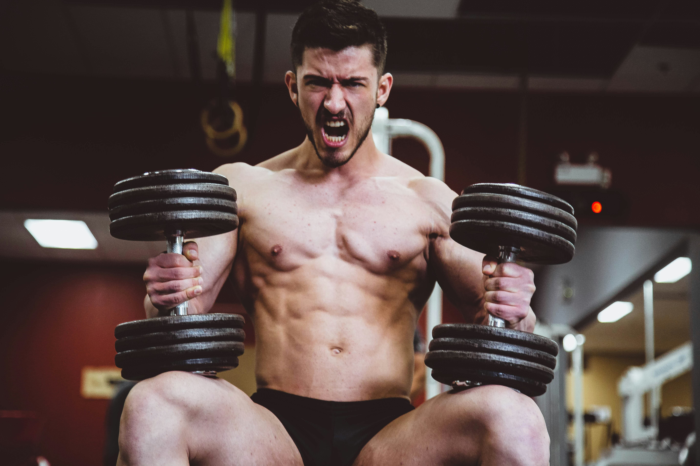

What is "Gym Face"?
"Gym face" is a term used in looksmaxxing communities to describe the facial transformation that occurs as a result of consistent gym training and reduced body fat. As overall body fat percentage drops, fat deposits in the lower face, cheeks, and neck diminish — revealing the underlying bone structure including jawline sharpness and cheekbone prominence. Both of these are directly measured by Omoggle's AI.
The Science Behind Facial Fat Loss
You cannot spot-reduce facial fat specifically, but the face tends to show fat loss relatively early compared to areas like the abdomen. For most people, visible facial changes begin at around 12–15% body fat for men and 18–22% for women. At these levels, the jawline becomes more defined, cheekbones become more prominent, and the overall facial harmony score improves.
How much can gym training raise your Omoggle score?
Community tracking shows an average improvement of 0.4–0.8 points on Omoggle's 0–10 scale for people who drop 10–15 lbs of body fat while maintaining muscle. The improvement primarily shows in jawline definition and cheekbone prominence metrics, with secondary improvement in overall harmony.
Most Effective Training Approaches
Compound lifts for hormonal benefits
Heavy compound movements — squats, deadlifts, bench press, overhead press, rows — stimulate testosterone and growth hormone production. Over months to years, elevated anabolic hormones contribute to facial masculinization, including jaw development and brow ridge prominence. This is why consistent lifters often show more defined facial structure than cardio-only athletes.
Caloric deficit for fat loss
A moderate deficit of 400–500 calories per day allows for steady fat loss (0.5–1 lb per week) while preserving muscle mass. Aggressive cuts accelerate muscle loss alongside fat, which can actually worsen facial appearance by creating a gaunt look rather than a defined one.
Cardio for accelerated fat loss
Adding 2–3 sessions of moderate cardio per week (30–45 minutes) accelerates the fat loss process. Steady-state cardio preserves muscle better than high-intensity interval training for most beginners.
Realistic Timeline
For most people starting from average body composition, visible facial changes appear within 8–16 weeks of consistent training and moderate dieting. Significant transformation (moving up a PSL tier) typically takes 6–12 months of consistent effort.
Track your facial transformation progress with our free AI Face Analyzer — take monthly photos to measure changes in jawline definition and cheekbone prominence over time.